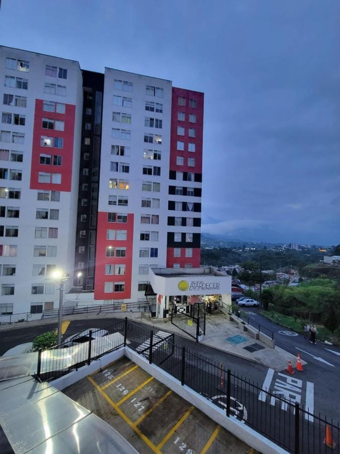
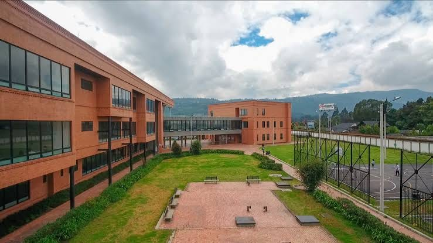

Sara Alvarez
My story before university
By the time I turned 18, I had experienced more than many people my age. I had traveled to Armenia, a warm and welcoming city, and I had fallen in love with its calm rhythm. Before that year ended, I had made one of the biggest decisions of my life: I had bought my own apartment there. I had carefully saved money, and I had visited several properties before choosing the right one. After that, I had moved in and started a new chapter in my life. I had never lived alone before, but I had quickly learned to manage my time, expenses, and responsibilities. My family had supported me throughout the entire process, and they had visited me often. We had shared countless meals, long conversations, and happy celebrations in my new home. During that period, I had also found a job at Adidas. I had worked hard to learn about the products and procedures, and my coworkers had taught me a lot about teamwork. Although I had felt nervous on my first day, I had soon become confident and motivated. By the end of that year, I had gained independence, work experience, and a deeper appreciation for my family.
By the time I turned 19, I had already started a new and exciting challenge. I had begun preparing applications for admission opportunities at Universidad de Cundinamarca in Chía, an opportunity that had seemed impossible only a few years earlier. I had carefully read every requirement and had gathered all the necessary documents. I had started the process in person, which had allowed me to meet people, ask questions, and understand how everything worked. My family had listened to my plans with surprise and pride, and they had encouraged me whenever I had doubted myself. My friends had also helped me practice English, and I had gradually improved my speaking skills. By then, I had learned how important discipline, patience, and organization were. I had made mistakes, corrected them, and continued moving forward. I had left my comfort zone, met people from different cultures, and begun to see the world from a broader perspective. When I thought about everything that had happened since I was 18, I had realized how much I had changed. I had gone from buying an apartment and working in a store to pursuing international opportunities.
Gallery of Memories

